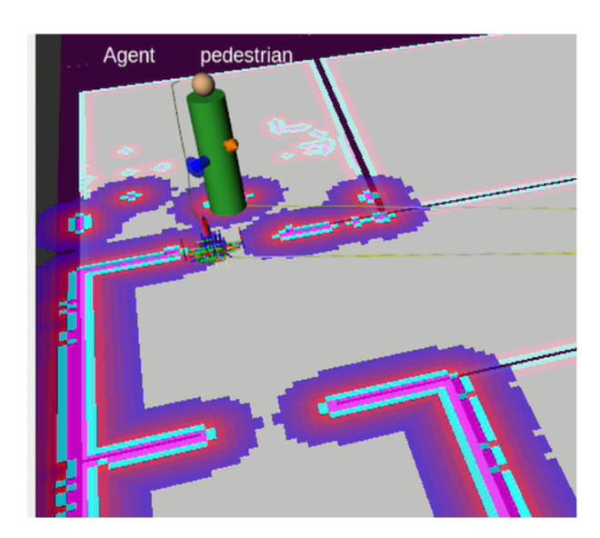
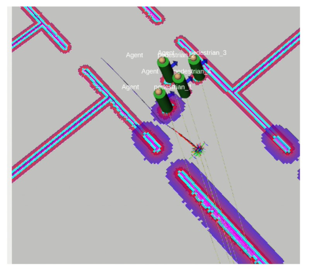
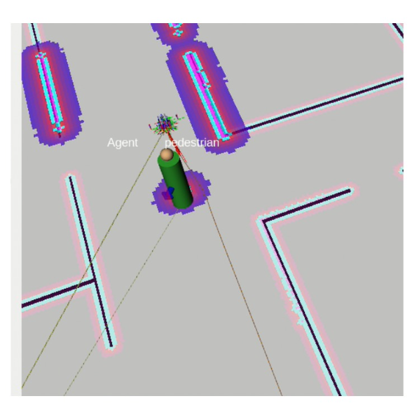

Robots navigating in crowded environments must exhibit socially compliant behavior, yet designing explicit social cost functions remains challenging due to the complexity and variability of human interactions.
We present SocialWalker, a framework that learns a social compliance cost directly from large-scale human walking videos without requiring manual social annotations or robot-collected interaction data. Our approach extracts ego trajectories and pedestrian proximity cues from internet videos to construct an ego-centric representation of social navigation. By treating the observed human trajectory as expert behavior and perturbed trajectories as negatives, we train a temporal ranking model to estimate a social compliance score for candidate robot trajectories.
At deployment, the learned social cost is integrated into a classical navigation stack through a plug-and-play min-cost selection scheme that combines goal cost, geometric cost, and the learned social cost. Experiments in the Arena simulation framework show that SocialWalker significantly reduces collision rates and improves social compliance metrics while maintaining comparable navigation efficiency. These results demonstrate the potential of leveraging large-scale human video data as a scalable source of supervision for socially aware robot navigation.
(Insert robot navigation demo video here)

Scenario 1: Doorway Bottleneck
In narrow passages that force close
interactions between robots and humans, SocialWalker encourages trajectories that maintain a larger
distance from pedestrians, reducing the collision rate from 90% to 10%.

Scenario 2: Group Blocking
Instead of attempting to squeeze through
narrow gaps within a group of pedestrians, SocialWalker guides the robot to navigate around the group. As
a result, collisions are reduced from 5% to 0%.

Scenario 3: Intersection Crossing
When a pedestrian's trajectory
intersects the robot's path, SocialWalker maintains a larger safety margin. The minimum safety distance
increases from 0.72 m to 0.75 m, while the intrusion ratio decreases from 3% to 1%.
We curate 5,000 video clips from publicly available egocentric walking footage (tourist vlogs, street-level recordings). Videos are sampled at 1 FPS. Ego trajectories are estimated using DPVO, pedestrians detected via YOLOv10, and monocular depth estimated with DepthAnything V2.
We model the interaction context using an ego motion history (8 past timesteps) and top-K closest pedestrian observations including bounding-box center, height, and estimated depth. If fewer than K pedestrians are detected, zero-padding is applied.
The observed human trajectory serves as the expert (positive), while 16 perturbed trajectories act as negatives. A temporal encoder (GRU + MLP) is trained via a listwise ranking objective to assign lower cost to socially compliant trajectories. This yields ~300K trajectory windows for training.
At deployment, the learned social cost is injected as an additive term into the planner's trajectory scoring. The trajectory with minimum combined cost (goal + geometric + α·social) is selected — no planner modifications needed.
The baseline DWB planner typically prioritizes path length and purely geometric costs. However, in narrow environments like doorways (doorway bottleneck), DWB often attempts to pass alongside pedestrians at very close proximity, leading to a collision rate of up to 90% and a personal space intrusion ratio of 55%.
MPPI is a powerful model predictive controller based on geometric costs. Nevertheless, without SocialWalker, MPPI's collision rate reaches 20%, and its success rate is only 80%.
DRLVO is a learning-based planner. However, it only achieves a success rate of 83.3% and has a relatively high collision rate of 25%, indicating that it struggles to handle complex real-world interactions compared to integrating SocialWalker into classical planners.
| Planner | Method | Success (%) | Collision (%) | Time (s) | Path (m) |
|---|---|---|---|---|---|
| DRLVO | Baseline | 83.3 | 25 | 127.2 | 34.8 |
| DWB | Baseline | 100 | 30 | 127.8 | 34.7 |
| DWB | SocialWalker | 96 | 14 | 106.7 | 34.5 |
| MPPI | Baseline | 80 | 20 | 93.6 | 29.7 |
| MPPI | SocialWalker | 100 | 10 | 111.4 | 34.1 |
| Planner | Method | Min Dist (m) | Intrusion Ratio (%) | Intrusion Time (s) |
|---|---|---|---|---|
| DRLVO | Baseline | 0.32 | 11.1 | 6.4 |
| DWB | Baseline | 0.33 | 17.0 | 9.7 |
| DWB | SocialWalker | 0.40 | 8.7 | 6.1 |
| MPPI | Baseline | 0.46 | 14.1 | 9.8 |
| MPPI | SocialWalker | 0.43 | 5.6 | 7.1 |
| Scenario | Method | Collision (%) | Min Dist (m) | Intrusion Ratio (%) |
|---|---|---|---|---|
| Corridor (Head-on) | Baseline | 0 | 0.39 | 14 |
| SocialWalker | 0 | 0.48 | 7 | |
| Overtaking | Baseline | 50 | 0.16 | 6.7 |
| SocialWalker | 45 | 0.32 | 2.4 | |
| Intersection Crossing | Baseline | 0 | 0.72 | 3 |
| SocialWalker | 0 | 0.75 | 1 | |
| Doorway Bottleneck | Baseline | 90 | 0.10 | 55 |
| SocialWalker | 10 | 0.45 | 22 | |
| Group Blocking | Baseline | 5 | 0.28 | 22 |
| SocialWalker | 0 | 0.45 | 12 |
@inproceedings{
socialwalker2024,
title={Social Walker: Learning a Social Compliance Cost from Web-Scale Human Walking Videos for Plug-and-Play Robot Navigation},
author={Author One, Author Two, Author Three},
booktitle={CoRL 2026},
year={2026},
}